263 GHz spectrometer (2nd Serie)
2021-2026, Bruker
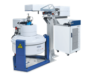
Next generation Millimeter wave EPR spectrometer. Further details on bruker.com.
2021-2026, Bruker

Next generation Millimeter wave EPR spectrometer. Further details on bruker.com.
20016-2021, Bruker
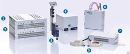
Measure EPR spectra on the fly. See bruker.com.
2007-2017, Bruker
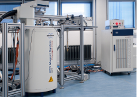
Millimeter wave EPR spectrometer. Further details on bruker.com.
2002-2007, ETH
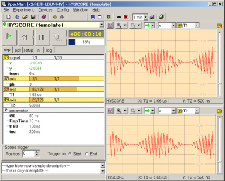
Spectrometer Manager (SpecMan) is a third generation of the spectrometer control program, which I have touched. Developers are Boris Epel, who is a leading programmer, Stefan Soll and myself. SpecMan has elaborated architecture built to arrange in a consistent way instrument control, data acquisition and flow, and pulse sequence programming. It gives to user interactive control over all experiment parameters in real time and provides flexible and effective way in experiment design and evaluation. Click here for further details. 4.01.07
2003-2007, ETH
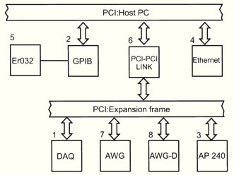
This is next generation of the acquisition system for epr@ETH. PCI bus is chosen as a system integration bus and recent PCI boards are selected to fit the most demanding tasks in pulse EPR. Those include 2 GS/s real time averager from Acqiris. It has dual-input with tunable gain and offset, 500 MHz bandwidth and it's able to accumulate up to 64k traces at once. Two AWG boards from Chase Scientific provide four RF channels and 12 pulse channels. The system is controlled by SpecMan. Recent poster (Denver, 2003). 3.01.04.
2001-2006, ETH
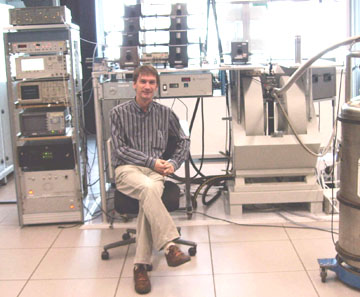
Open for users in 2005. This spectrometer is a renovated version of the ETH-type pulse X-band instrument. For the latter see T. Waker PhD thesis for technical details. I have used this instrument to develop pulse programmer, control system II and SpecMan. Finally, I completed the installation and rebuild mw part in a way more convenient for users. Currently Xband II is operational, able to make HYSCORE or ENDOR experiments faster than E580 from Bruker BioSpin. In the ENDOR case stochastic RF sweep, passive RF leveling and others useful features are available. A little thing left to do there is to swap pulse programmers between this instrument and S-band spectrometer, which I put under SpecMan control as well (cw only at the moment). With Jörg Forrer and Rene Tschaggelar.
1999-2003, ETH
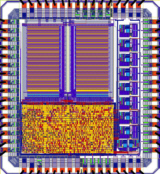
We design and build ourselves a modern pulse programmer. Jaap Shane, who was very enthusiastic about electronics and Boris Glass designed an ASIC for the pulse EPR applications (see picture on the left). Then I was driving this project trying to get working the complete system consisting frontend PC and Texas DSP, which controls pulse-forming unit with two EPR ASICs. The team was Jörg Forrer and Rene Tschaggelar (electronic engineers) and Jörg Keller (programmer). Finally, I was able to record ESEEM and HYSCORE in real time, monotonically at about 1.5 kHz from the beginning of a experiment till its end, using this programmer. 3.10.03
1999-2003, ETH
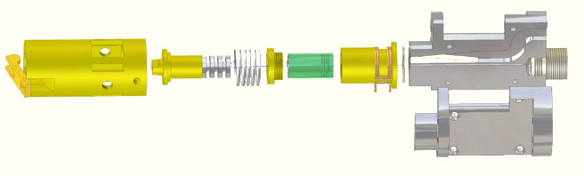
For the beginning, the probe-head was designed to overcome the main disadvantages of the ER5106-QTE probe-head (Bruker BioSpin) - small sample size and a little bit low P-to-B1 conversion factor. The goal was reached (3.8 mm tubes, 5 ns pi/2 with 40 W incident power and strongly overcoupled cavity) and since year 2000 a lot of experiments, including matching or decoupling, were made by my colleagues using this probe. Look on Schweiger's group publications, take one where Ka-band (aka Q-band) is mentioned, most probably this probe was exploited. Then cw and ENDOR options were included. At the end the probe-head almost as easy in use as Bruker's one, it has better sensitivity and stronger B1 at the same power; ENDOR performance is weaker than ER5106 has, but note that in last case the conversion B2/Prf is extremely high! The people who was/is involved in the projects: toolmakers Willi Groth (retired recently) and Barbara Feuer (who take the baton) and electronics engineer Jörg Forrer who gave many valuable suggestions for the design. Recent poster (Portoroz, 2003). 3.01.2004. Finally I have published a paper because Arthur asked me many times about.
1998-2002, ETH
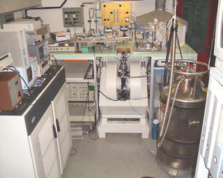
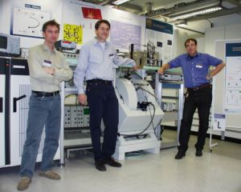
Operational since end of 1998. The spectrometer was built by Jaap Shane and Jörg Forrer. I just made it working, then teached users how to deal with it, rebuild and finally kept the spectrometer alive. The spectrometer has 100 W of mw power at 35 GHz, good acquisition system E580 from Bruker, thanks to Peter Hofer who gave us opportunity to be first who implemented such a system on home-made spectrometer, and it is equipped with state-of-art mw components. The most components, made using fin-line technology. I still do some upgrade here, ER036 FTNMR gaussmeter has been implemented recently, but not so much as before. The photo on the left/top was taken in 2001 in old Chemistry building and on the left/bottom in 2002 in new building at Hönggerberg ETH campus. Some details about spectrometer can be found here. To see user guide with more detailed scheme click here.
Statistics: time counter on 187Ka TWT shows 15'562 h. Taking in account that spectrometer is 8 years in operation one obtains averaged usage 5 hours per day! The paper about spectrometer cited, as a reference to instrument, 18 times which is slightly less than number of work done using it.
7.11.06 In 2006 Jörg Forrer started an upgrade of spectrometer, eight new mw channels are operational already, 8(16) ns for π/2(π) pulses are available routinely. 4.01.2007
1997-1998, WIS
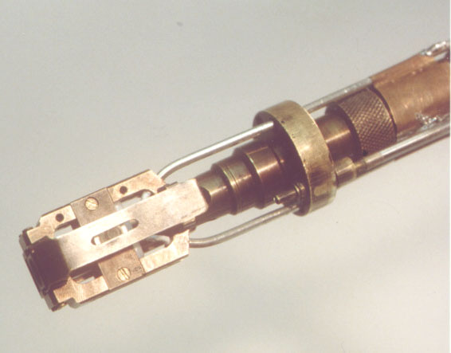
The probehead was built by V. Krymov. I did just a small improvement. The tricks here were how to tune W-band transmission line (about 1 m long with several junctions) without network analyzer and what to change in small cylindrical cavity to make it transparent to rf field. With Daniella Goldfarb. 3.10.03
1997-1998, WIS
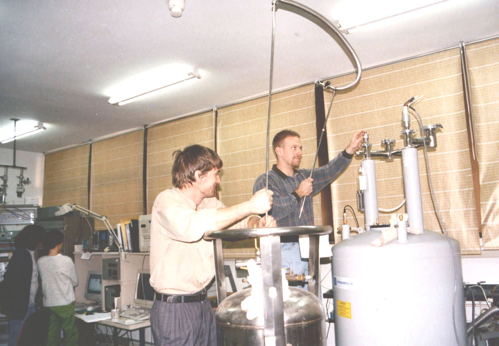
I really enjoy a time in the lab of Daniella Goldfarb, including the time to assemble and run W-band spectrometer. The mw bridge (elva-1.com) and the probe-head are from V. Krymov. For further details look here or there. 3.10.03
1997-1998, WIS
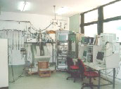
Here my job was to teach students how to do ENDOR on X-band. And I earned a good experience in conventional and advanced ENDOR. There were of course some technical problems I was dealing with. Here I was working with two spectrometer control programs one from ETH, written by J.M. Fauth, and another one, known as "Jaap's program", written by Jaap Shane. I was maintaining the latter. Some examples, as well as spectrometer description you can find here. With Daniella Goldfard. 3.10.03
1989-1992, KSU
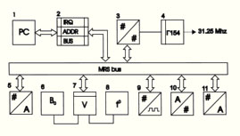
In operation since 1990. I guess the similar system is still in operation at KSU at pulse X-band spectrometer, and most probably I will be able to run my one (Ka-band, KSU) even now. The electrical/logical and mechanical specifications of the system were introduced by B. Kazakov and I. Motygullin (MRS, KSU). 16-bit bi-directional data bus, (4+8) bits address space. 20 slots in crate, 16 of them are programmable. Priority interrupt controller, crate controller, address decoder and link to ISA. Fully featured/very powerful system and what is even more important - it's simple enough to be build by non-engineer. 3.10.03
1990-1995, KSU
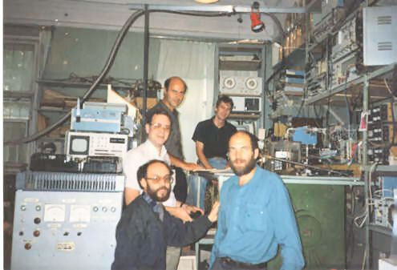
My first spectrometer was a 35 GHz pulse EPR apparatus. Home-made in full sense of this word. I'm not only assembled the mw components but also fixed some of them and built all analog control circuits of the pulse bridge as well as construct whole control system (see above). The spectrometer was made using solid state mw components only. No klystrons, no tubes. It has three mw sources, two are 50 mW cw Gunn oscillators and third one is pulsed IMPATT oscillator based on two silicon double drift diodes. The frequency of the first Gunn was voltage controlled (varactor) and this source was used for a probe-head tuning. The second Gunn is one of most stable free running mw sources (no DR, no external thermostabilization, only a diode camera, stabilizing cavity and isolator) I ever seen. It was used for cw in absorption mode and saturation recovery measurements. The key component is the pulse IMPATT oscillator. Two diodes (p-p+-n+-n) were fixed in coaxial lines and then placed at certain positions in a section of WR28 waveguide. By proper adjustment of the diode positions and an amplitude and a shape of the current pulses applied to the diodes I was able to reach 2 W power with the negligible frequency chirp. There are many others beautiful components inside, some details are mentioned there. Rafail (left bottom) and Yurii (probably making this photo) built even a loop-gap resonator for 35 GHz. 3.10.03